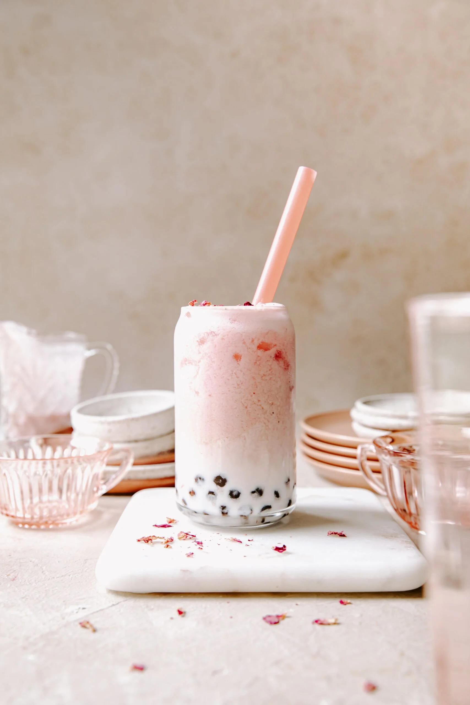
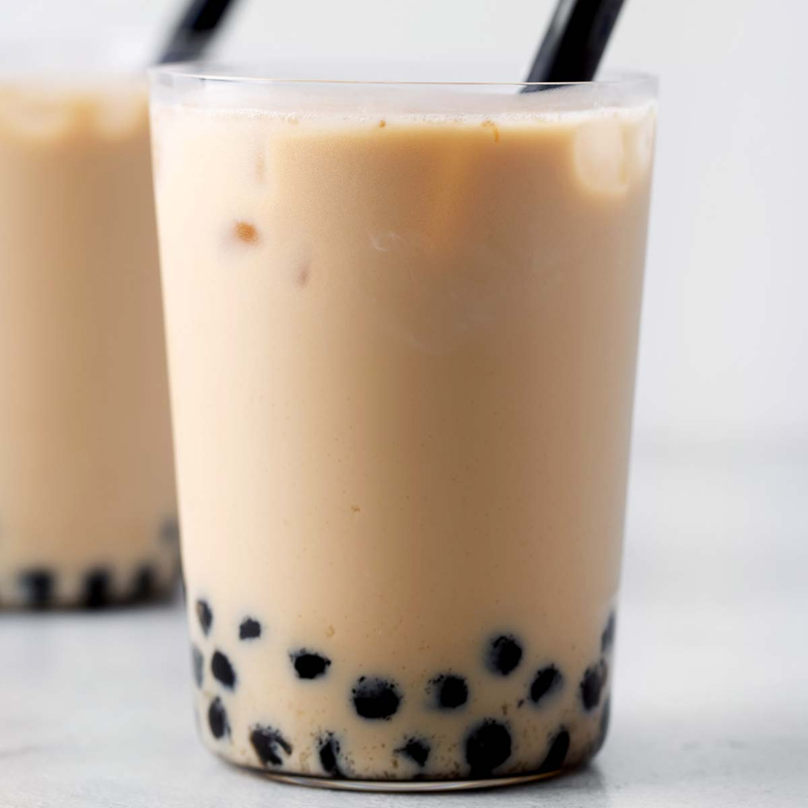

Popular Boba Flavors



Flavor Descriptions
- Classic Milk Tea: Black tea with creamy milk and chewy tapioca pearls.
- Taro Boba: Sweet, nutty, and purple! Made from taro root.
- Matcha Latte: Earthy Japanese green tea with milk and boba.
- Brown Sugar: Rich brown sugar syrup with fresh milk and pearls.
- Honeydew: Refreshing melon flavor, perfect for summer.
- Strawberry: Sweet strawberry blended with tea and milk.
- Mango: Tropical mango with a fruity twist.
- Coffee: For coffee lovers who want a boba kick.
- Coconut: Creamy coconut milk tea with chewy pearls.